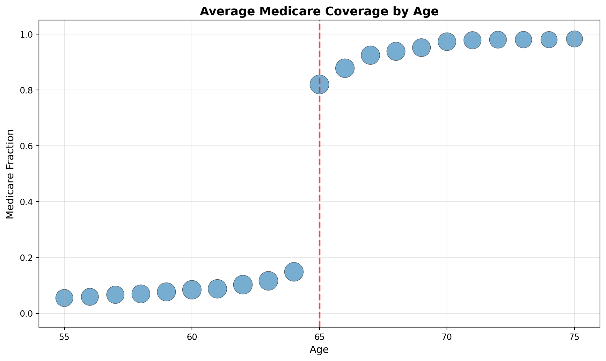
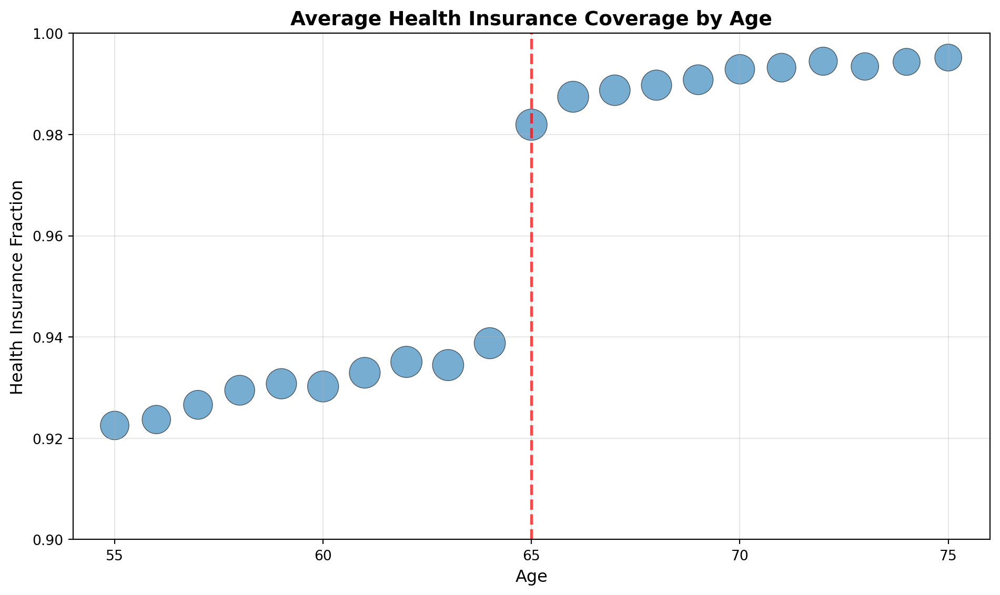
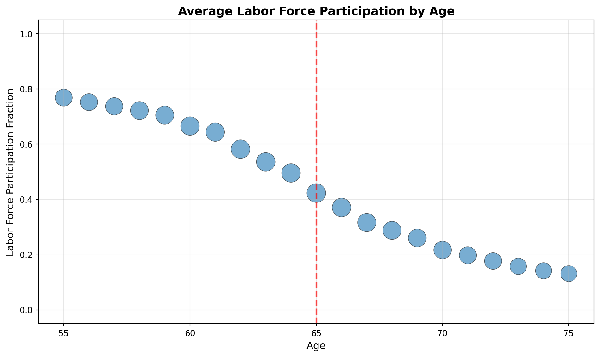

| Has Health Insurance | Count | Percentage | |
|---|---|---|---|
| 0 | 0 | 37395 | 3.87 |
| 1 | 1 | 927643 | 96.13 |
12 The American Community Survey (ACS)
12.1 Brief Introduction
The American Community Survey (ACS) is a nationwide survey conducted by the U.S. Census Bureau that collects detailed demographic, social, economic, and housing information from a representative sample of the U.S. population. It overlaps considerably with the Current Population Survey (CPS), although there are some important differences.
12.2 Downloading the ACS
IPUMS USA (same organization that produces IPUMS CPS) provides harmonized versions of the ACS. There are a couple different types of data that you can download from IPUMS USA. For example, you can download Decennial census microdata from 1790 to 2010 or the American Community Survey data from 2000 to present. For this chapter, we are going to download the most recent version of the ACS data from 2023.
Again, like the CPS, there are many variables available in the ACS. For this chapter, we will focus on a subset of variables related to health insurance coverage, labor force participation, and demographics. However, to stress, the ACS can (and has) been used to study a wide variety of topics. If you are interested in exploring the ACS data further, I encourage you to visit the IPUMS USA website. This will allow you to see the massive time span that the ACS and Census data cover as well as the wide variety of variables that are available.
12.3 Retirement Policies
There are a number of policies in the United States that are tied to age and may impact retirement decisions. The one we are going to focus on is the availability of publicly provided health insurance through Medicare, which begins at age 65. Since health insurance is often tied to employment in the U.S., gaining access to Medicare may influence individuals’ decisions about whether to remain in the labor force or retire.
However, there are two other important age-based policies. First, at age 62, individuals become eligible to receive Social Security retirement benefits, although these benefits are reduced compared to waiting until full retirement age. At full retirement age (which is 67), individuals can receive their full Social Security benefits. Therefore, the availability of Social Security may impact when individuals choose to retire.
Since we are focusing on retirement, we are going to limit our sample to individuals aged 55-75.
12.4 Key Variables
The dataset contains several binary indicator variables. These are variables that take on either a value of zero (condition is false) or one (condition is true). For example, let’s first take a look at the variable indicating whether an individual has health insurance coverage. The name of this variable is has_health_insurance. Note: this does not come directly from IPUMS USA, but rather was created by me while cleaning the data. In particular, as part of the cleaning process I dropped all individuals for which this variable was missing and recoded the variable so that it is equal to 1 if the individual has any health insurance coverage and 0 otherwise.
So in the data, most individuals do have health insurance coverage. Many of of these individuals likely have private heath insurance through their employer, while others may have public health insurance through programs like Medicare. It is also possible that some individuals younger than 65 may have public health insurance through Medicaid.
As a quick aside, it is generally very useful to code binary indicator variables as 0/1 variables rather than using string labels like “yes” and “no”. This makes it much easier to work with these variables in statistical software. Additionally, you want the variables to be coded as 0/1, not some other numbers like 1/2 or -1/1. There are many reasons for this. One simple reason is that if you want the proporition of individuals with health insurance, you can just take the mean of the variable when it is coded as 0/1. For example, imagine we have three individuals with health insurance coded as follows:
| Individual | has_health_insurance |
|---|---|
| 1 | 1 |
| 2 | 0 |
| 3 | 1 |
It is easy to see that 2 out of 3 individuals have health insurance, or 66.67%. We can also calculate this by taking the mean of the variable: (1 + 0 + 1) / 3 = 0.6667. This will be useful later when we construct graphs. If we want the fraction in the labor force by age, we can just take the mean of the in_labor_force variable. Now, if the variable were coded as “yes” and “no”, or as 1 and 2, we would not be able to do this.
Since we are going to be focused on retirement decisions due to Medicare, let’s look directly at this variable as well. This variable is called has_medicare and is again a binary indicator variable equal to 1 if the individual has Medicare coverage and 0 otherwise.
| Has Medicare | Count | Percentage | |
|---|---|---|---|
| 0 | 0 | 462326 | 47.91 |
| 1 | 1 | 502712 | 52.09 |
12.5 Regression Discontinuity Design
All of these policies are determined by cutoff rules, making them potential candidates for regression discontinuity analysis, which we studied in Chapter 6: Human Capital. First, let’s see how the probability of having Medicare coverage changes at age 65. This will be our “treatment” variable. We will then study how this change in Medicare coverage affects labor force participation.

So clearly, turning 65 leads to a large increase in the probability of having Medicare coverage. However, it doesn’t go from zero to 100 percent. There are some rare cases that individuals under 65 may have Medicare coverage (for example, individuals with certain disabilities). There is also potential for measurement error. People may be reporting that they are covered by Medicare when they are actually on Medicaid or insurance program. This could explain why we see a non-negligible fraction of individuals under 65 with Medicare coverage.
However, it is clear there is an enormous jump in the fraction of individuals with Medicare coverage at age 65. For 65 and older, more than 80 percent of individuals have Medicare coverage. This makes this a fuzzy regression discontinuity design. Crossing the threshold has a large impact on the probability of treatment (having Medicare), but it is not a perfect jump from zero to one.
Now, for contet, many people do have health insurance through private options, generally provided by employers. So let’s see if this enormous jump in Medicare coverage at age 65 is associated with increased coverage more generally. Therefore, we are going to replace the has_medicare variable with the has_health_insurance variable in the graph above. This variable indicates whether the individual has any health insurance coverage, whether through Medicare, private insurance, Medicaid, or other sources.

Again we see a noticeable jump in the fraction of individuals with health insurance coverage at age 65. However, we have to be careful about the scale on the y-axis. As we can see, the fraction of individuals with health insurance before age 65 is already quite high, at 94 percent. However, there is still a noticeable increase in health insurance coverage at age 65 due to the availability of Medicare. The fraction of individuals with health care coverage increases to nearly 98 percent at age 65 and older.
Finally, let’s see if this increase in health insurance coverage at age 65 is associated with changes in labor force participation. The variable we will use to measure labor force participation is called in_labor_force, which is again a binary indicator variable equal to 1 if the individual is in the labor force (either employed or actively looking for work) and 0 otherwise.

So perhaps surprisingly, we don’t see a large drop in labor force participation at age 65. There is a gradual decline in labor force participation as individuals age, but there is no clear discontinuity at age 65. This suggests that gaining access to Medicare does not have a large impact on individuals’ decisions to remain in the labor force or retire.